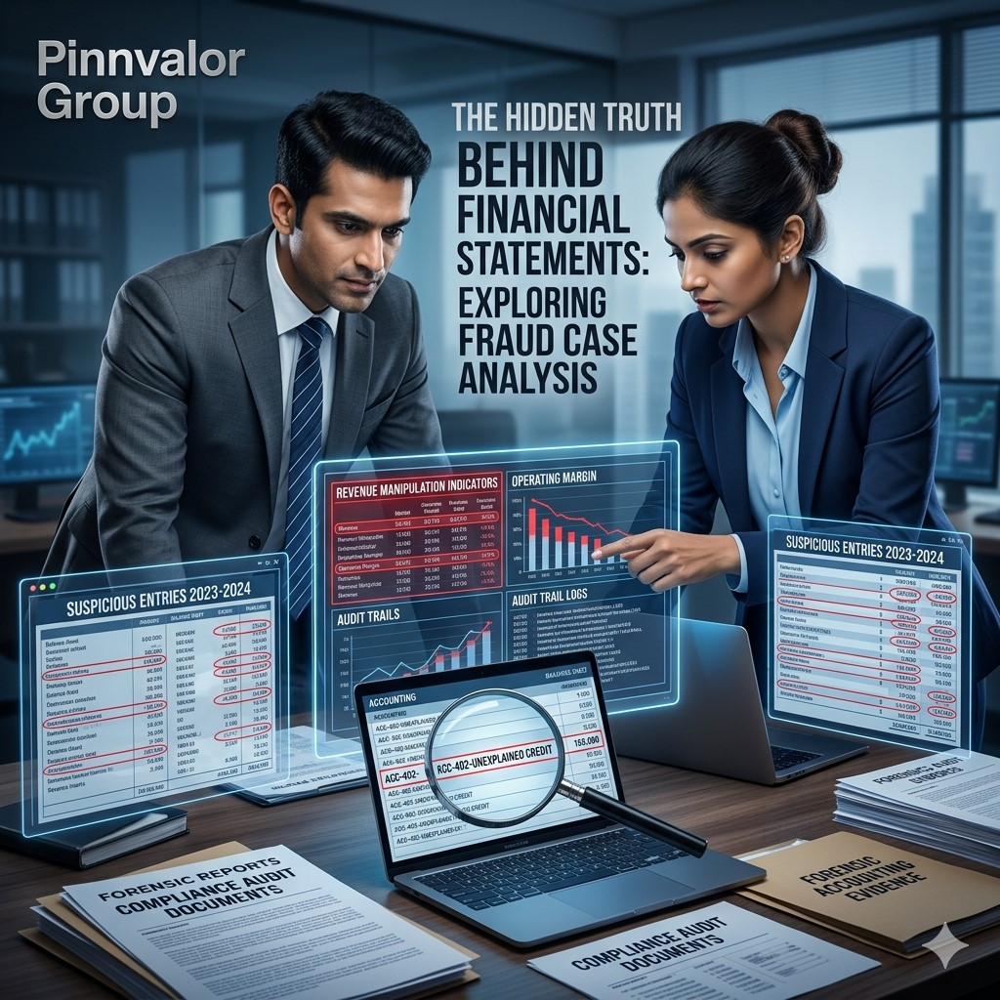

The Hidden Truth Behind Financial Statements: Exploring Fraud Case Analysis
Financial statements are often considered the backbone of corporate transparency. Investors, lenders, regulators, and stakeholders depend on them to evaluate a company’s financial health and future potential. However, when these reports are intentionally manipulated, the consequences can be devastating for businesses, investors, employees, and entire financial markets.
What warning signs reveal the hidden truth behind financial reporting fraud?
The biggest corporate frauds often begin with small accounting manipulations hidden behind impressive growth stories. Sustainable success is built on integrity, not inflated financial performance.
Financial reporting fraud is one of the most serious corporate crimes because it creates a misleading picture of a company’s performance and financial position. Through manipulated revenues, hidden liabilities, inflated assets, and deceptive disclosures, organizations may present artificial growth and profitability while concealing operational or financial weaknesses.
Over the years, several high-profile corporate scandals have demonstrated how fraudulent reporting can destroy market confidence and corporate reputation. Understanding how financial fraud occurs, identifying red flags, and learning from real-world fraud cases are critical for modern businesses and finance professionals.
What Is Financial Reporting Fraud?
Financial reporting fraud refers to the intentional manipulation, omission, or falsification of financial information to deceive users of financial statements. Unlike accounting errors, fraud involves deliberate actions aimed at presenting false financial performance or financial position.
Common Objectives Behind Financial Reporting Fraud
- Inflating company valuation
- Meeting investor and analyst expectations
- Securing financing or investments
- Maintaining stock prices
- Increasing executive incentives and bonuses
- Concealing losses or financial distress
- Avoiding regulatory attention
Common Types of Financial Reporting Fraud
1. Revenue Manipulation
Revenue inflation is one of the most common fraud techniques. Companies may record fictitious sales, recognize revenue prematurely, or manipulate contracts to boost earnings artificially.
2. Expense Understatement
Organizations may intentionally defer expenses or improperly capitalize operational costs to improve profitability.
3. Asset Overstatement
Fraudulent businesses may overvalue inventory, inflate receivables, or manipulate asset valuations to strengthen balance sheets.
4. Concealment of Liabilities
Some companies hide debt obligations or contingent liabilities through off-balance-sheet arrangements.
5. Cash Flow Manipulation
Misclassifying financing cash flows as operating cash flows can create a misleading picture of liquidity and operational strength.
6. Related Party Transaction Abuse
Undisclosed related-party transactions may be used to inflate revenues or transfer losses.
Major Causes of Financial Reporting Fraud
Pressure
Management may experience pressure to achieve growth targets, maintain stock prices, or satisfy investor expectations.
Opportunity
Weak internal controls, poor governance structures, and ineffective oversight create opportunities for fraud.
Rationalization
Fraudsters often justify misconduct by believing the manipulation is temporary or necessary for business survival.
These three factors collectively form the widely recognized Fraud Triangle.
Case Analysis: Major Financial Reporting Fraud Scandals
1. Enron Corporation
The Fraud
Enron used complex off-balance-sheet structures and special purpose entities (SPEs) to conceal debt and inflate profits while presenting itself as a highly successful energy company.
Key Fraud Techniques
- Off-balance-sheet financing
- Mark-to-market accounting manipulation
- Artificial revenue recognition
- Concealment of liabilities
Impact
- Massive investor losses
- Collapse of Arthur Andersen
- Loss of employee retirement savings
- Global corporate governance reforms
Key Lesson
Complex financial structures without transparency often indicate elevated fraud risk.
2. Satyam Computer Services
The Fraud
Satyam’s management admitted to inflating revenues, profits, and cash balances for years, making it one of India’s biggest corporate fraud scandals.
Key Fraud Techniques
- Fake invoices
- Fictitious bank balances
- Inflated revenues
- Manipulated financial records
Impact
- Severe investor losses
- Damage to India’s corporate governance reputation
- Increased regulatory scrutiny
Key Lesson
Strong corporate growth should always be supported by transparent governance and independent oversight.
3. Wirecard AG
The Fraud
The German fintech company overstated cash balances and fabricated revenues through questionable third-party arrangements.
Key Fraud Techniques
- Fake escrow balances
- Fabricated revenues
- Misleading disclosures
Impact
- Corporate insolvency
- Regulatory criticism
- Loss of investor confidence in fintech governance
Key Lesson
Rapid innovation should never replace strong financial oversight and audit procedures.
4. WorldCom
The Fraud
WorldCom improperly capitalized operating expenses to artificially inflate profits and reduce reported expenses.
Key Fraud Techniques
- Improper expense capitalization
- Profit inflation
- Expense suppression
Impact
- One of the largest bankruptcies in corporate history
- Significant market disruption
- Billions in investor losses
Key Lesson
Even simple accounting manipulations can create massive financial distortions when governance systems fail.
Major Red Flags That Signal Financial Reporting Fraud
1. Consistently Unrealistic Growth
Businesses reporting extraordinary performance despite difficult market conditions may require deeper investigation.
2. Strong Profits but Weak Cash Flows
A mismatch between profitability and operating cash flow may indicate aggressive revenue recognition practices.
3. Frequent Auditor Changes
Repeated changes in auditors can sometimes indicate governance or accounting concerns.
4. Complex Organizational Structures
Excessive subsidiaries and offshore entities may be used to hide liabilities or questionable transactions.
5. Aggressive Management Behavior
Management that avoids transparency or discourages questioning may present elevated fraud risk.
6. Unusual Related-Party Transactions
Transactions lacking clear commercial purpose should always be reviewed carefully.
The Role of Auditors in Fraud Detection
Auditors play an important role in evaluating whether financial statements are free from material misstatement caused by fraud or error. Although auditors cannot guarantee fraud detection, professional skepticism and strong audit procedures significantly improve fraud identification.
Key Auditor Responsibilities
- Assessing fraud risk factors
- Testing internal controls
- Reviewing unusual journal entries
- Performing analytical procedures
- Verifying balances independently
- Investigating suspicious transactions
- Communicating deficiencies to governance

How Technology Is Transforming Fraud Detection
Artificial Intelligence & Data Analytics
AI-driven systems can identify unusual transaction patterns, anomalies, and inconsistencies across large datasets.
Continuous Monitoring
Real-time monitoring systems help organizations identify suspicious activities earlier.
Blockchain Technology
Blockchain improves transparency by creating immutable transaction records that are difficult to manipulate.
Forensic Analytics
Advanced forensic tools can uncover hidden relationships, fraudulent journal entries, and unusual financial trends.
Strengthening Corporate Governance Against Fraud
Strong Internal Controls
Segregation of duties, approval hierarchies, and regular reconciliations reduce fraud opportunities.
Independent Audit Committees
Independent oversight improves accountability and enhances financial transparency.
Ethical Corporate Culture
A strong ethical environment significantly reduces pressure-driven misconduct.
Whistleblower Mechanisms
Confidential reporting systems encourage employees to report suspicious activities without fear.
Transparent Reporting Practices
Clear financial disclosures and consistent accounting policies improve stakeholder trust.
Key Business Lessons from Financial Reporting Fraud Cases
- Growth without transparency is unsustainable.
- Strong governance is essential for long-term success.
- Internal controls and independent audits are critical safeguards.
- Financial statement quality matters more than short-term profitability.
- Corporate ethics directly influence business sustainability and investor confidence.
Conclusion
Financial reporting fraud is not just an accounting issue — it is a strategic, ethical, and governance failure that can destroy businesses and stakeholder trust. The world’s largest fraud scandals consistently reveal the dangers of weak controls, excessive pressure, poor oversight, and unethical leadership.
As businesses become increasingly data-driven and globally connected, the importance of transparent reporting, strong governance, advanced fraud detection systems, and ethical corporate culture continues to grow.
In today’s competitive business environment, trustworthy financial reporting is not merely a compliance requirement — it is the foundation of sustainable growth, investor confidence, and long-term corporate credibility.